(点击上方公众号，可快速关注)
作者：流云诸葛
网址：http://www.cnblogs.com/lyzg/p/5224063.html
前后端分离这个词一点都不新鲜，完全的前后端分离在岗位协作方面，前端不写任何后台，后台不写任何页面，双方通过接口传递数据完成软件的各个功能实现。此种情况下，前后端的项目都独立开发和独立部署，在开发期间有2个问题不可避免：第一是前端调用后台接口时的跨域问题（因为前后端分开部署）；第二是前端脱离后台服务后无法独立运行。本文总结最近一个项目的工作经验，介绍利用grunt-contrib-connect和grunt-connect-proxy搭建前后端分离的开发环境的实践过程，希望能对你有所帮助。
注：
（1）本文的相关内容需对前端构建工具grunt有所了解：http://www.gruntjs.net/getting-started，这个工具可以完成前端所有的工程化工作，包括代码和图片压缩，文件合并，静态资源替换，js混淆，less和sass编译成css等等，推荐没有用过类似工具的前端开发人员去了解。
（2）grunt-contrib-connect和grunt-connect-proxy是grunt提供的两个插件，前者可以启动一个基于nodejs的静态服务器，这样前端就能脱离后端通过web服务的方式来访问自己开发的东西；后者可以把前端项目里面某些特殊的请求代理到其它服务器，哪些请求能够通过代理转发到别的服务器，这个规则都是可配置的，这样就能把一些跟后台交互的请求通过代理的方式，在开发期间，转发到后端的服务来处理，从而避免跨域问题。
代码下载（http://files.cnblogs.com/files/lyzg/proxy_demo.zip）
1.效果演示
在前面提供的代码中，里面有两个文件夹：
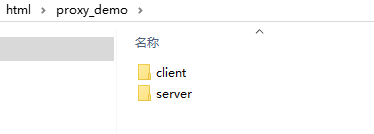
分别代表前后端独立运行的两个项目，client表示前端，server表示服务端。在实际运行client和server里面的服务之前，请确保已经安装好了grunt-cli，如果没有安装，请按照grunt的文档先安装好grunt-cli这个npm的包。如果你已经安装好了grunt-cli，那么进入到client或者server文件夹下，就能直接使用grunt的命令来启动服务了，不需要再运行npm install 来安装依赖了，因为client和server文件夹下已经包含进了下载好的依赖。在实际的前后端项目中，server端可以是任何架构类型的项目，java web ,php, asp.net等等都可以，demo里面为了简单模拟一个后台服务，于是就利用grunt启动一个静态服务来充当server端，不过它实际上的作用跟java web等传统后端项目是一样的。
为了看到请求被代理转发的效果，请先在server文件夹下启动服务，命令是：grunt staticServer：
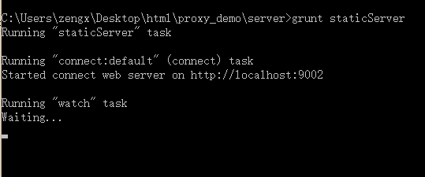
只要看到跟截图运行类似的结果，就表示server端的服务启动成功。从截图中还能看到server端的服务的访问地址是：http://localhost:9002/。
然后在client文件夹下启动配置了代理的服务，命令是：grunt proxyServer：
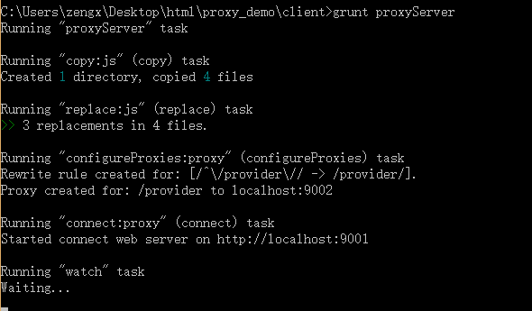
只要看到跟截图运行类似的结果，就表示client端的服务启动成功。从截图中能看到client端服务的访问地址是：http://localhost:9001/，同时还可以看到服务代理的配置：

这段运行结果说明，client端里面以/provider开头的请求都会被代理转发，并且会被代理到http://localhost:9002/provider 来处理。举例来说，假如在client端里面发起一个请求，这个请求的URL是：http://localhost:9001/provider/query/json/language/list，那么最终处理这个请求的服务地址实际上是：http://localhost:9002/provider/query/json/language/list。
client端启动之后，应该会自动打开浏览器，访问http://localhost:9001/，显示的是client端的首页。打开首页之后，按F12打开开发者工具，如果在控制台看到如下类似的消息，就说明首页里的请求正确地通过代理请求到了服务端的数据：
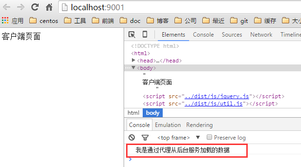
在client的首页里面，我发起了一个ajax请求，请求地址为http://localhost:9001/provider/query/json/language/list，在client文件夹下根本不存在provider文件夹，所以如果没有代理的话，这个请求肯定会报404的错误；它之所以能够正确的加载，完全是因为通过代理，请求到了server文件夹下相应的文件：
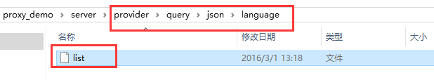
如果不通过代理，在localhost:9001/的服务里，请求localhost:9002/的数据是肯定会有跨域问题的，而代理可以完美的解决这个问题。
前面这一小部分演示了demo里面如何通过代理来解决跨域问题，下面一部分演示如何在脱离后端服务的情况下如何正常运行前端项目，首先请关闭之前打开的client服务和server端服务以及浏览器打开的client页面，然后打开client/Gruntfile.js文件，找到以下部分：
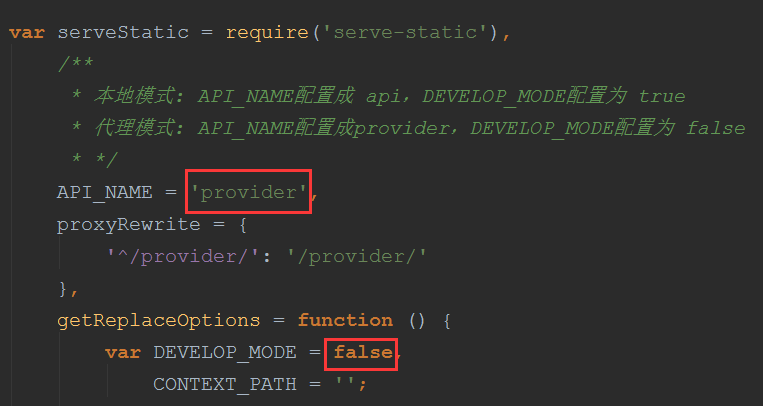
把provider改成api，把false改成true；
接着在client文件夹，运行非代理的静态服务，这个服务不会配置代理，启动命令是：grunt staticServer：
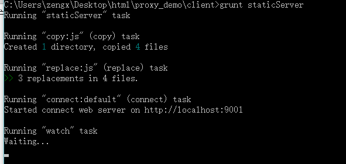
打开浏览器的开发者工具，在控制台应该可以看到如下消息：
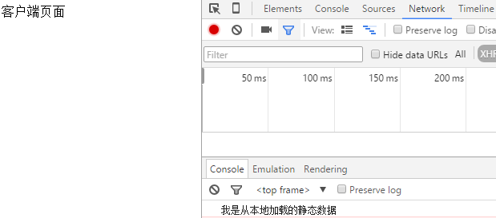
这个过程是：原来通过代理请求地址是：http://localhost:9001/provider/query/json/language/list，在没有代理的时候，我会把http://localhost:9001/provider/query/json/language/list这个请求改成请求http://localhost:9001/api/query/json/language/list.json ，而在我client文件夹下存在这个json文件：
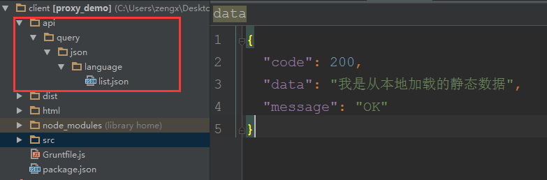
也就是说我会把跟服务端所有接口的返回的数据都按相同的路径，在本地以json文件的形式存在api文件夹下，在没有代理的时候，只要请求这些json文件，就能保证我所有的操作都能正确请求到数据，前端的项目也就能脱离代理运行起来了，当然这个模式下的数据都是静态的了。
接下来我会介绍如何前面这些内容的实现细节，只介绍client里面的要点，server里面的内容很简单，只要搞清楚了client，server一看就懂：）
2. Grunt配置
在了解配置之前，先要熟悉项目的文件夹结构：
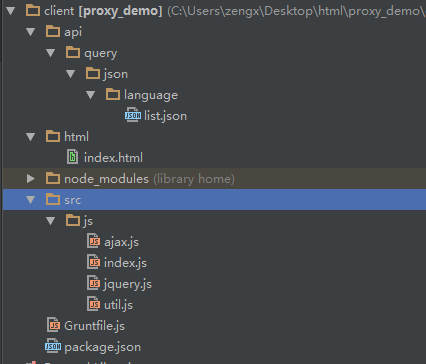
仅仅是为了完成demo，所以项目的文件夹结构和Grunt配置都做了最大程度的简化，目的就是为了方便理解，本文提供的不是一个解决方案，而是一个思路，在你有需要的时候可以参考改进应用到自己的项目当中，在前端工程化这一块，要用到的插件比demo里面要用到的多的多，你得按需配置。就demo而言，最核心的插件当然是grunt-contrib-connect和grunt-connect-proxy，但是要完成demo，也离不开一些其它的插件：
load-grunt-tasks：我用它一次性加载package.json里面的所有插件：
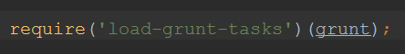
grunt-contrib-copy：我用它来复制src里面的内容，粘贴到dist目录下：
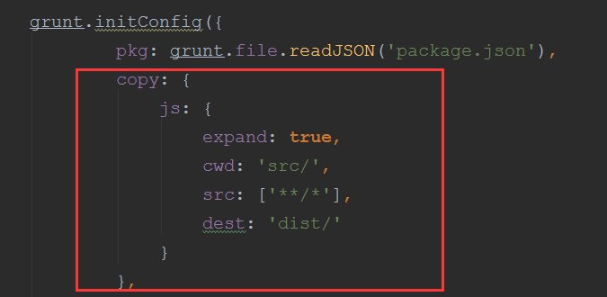
只要运行grunt copy任务，就会看到项目结构了多了一个dist文件夹：
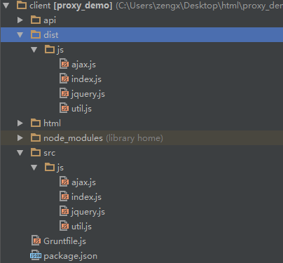
grunt-contrib-watch： 我用它监听文件的改变，并自动执行定义的grunt任务，同时还可以通过livereload自动刷新浏览器页面：
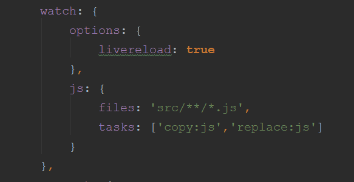
grunt-replace：我用它来替换文件中某些特殊字符串，这样就能够在不手动更改源代码的情况下改变代码。非代理模式之所以能请求到本地的静态json数据，并不是因为我手动改变了请求地址，而是改变了请求地址处理函数中的处理规则，这个规则的改变实际上就是通过grunt-replace来做的：
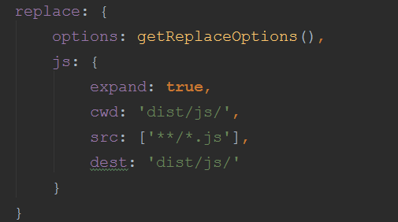
替换的规则通过getReplaceOptions这个函数来配置：
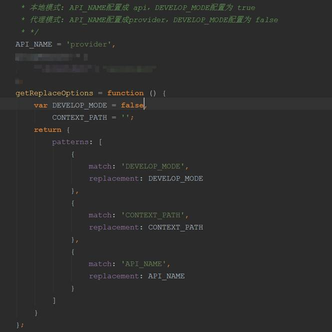
注意注释部分的说明，所谓的本地模式，其实就是运行grunt staticServer的时候，代理模式就是运行grunt proxyServer的时候，这段注释要求在运行grunt staticServer之前必须先把API_NAME改成api，把DEVELOP_MODE改成true，只有这样那些需要代理的请求才会请求本地的json文件，在运行grunt proxyServer之前必须先把API_NAME改成provider，把DEVELOP_MODE改成false，只有这样才能正确地将需要代理的请求进行转发。
3. 重点：grunt-contrib-connect和grunt-connect-proxy的配置
在grunt任务配置中，通常每个插件都会配置成一个任务，但是grunt-connect-proxy不是这样，它是与grunt-contrib-connect一起配置的：
connect: {
options: {
port: '9001',
hostname: 'localhost',
protocol: 'http',
open: true,
base: {
path: './',
options: {
index: 'html/index.html'
}
},
livereload: true
},
proxies: [
{
context: '/' + API_NAME,
host: 'localhost',
port: '9002',
https: false,
changeOrigin: true,
rewrite: proxyRewrite
}
],
default: {},
proxy: {
options: {
middleware: function (connect, options) {
if (!Array.isArray(options.base)) {
options.base = [options.base];
}
// Setup the proxy
var middlewares = [require('grunt-connect-proxy/lib/utils').proxyRequest];
// Serve static files.
options.base.forEach(function (base) {
middlewares.push(serveStatic(base.path, base.options));
});
// Make directory browse-able.
/*var directory = options.directory || options.base[options.base.length - 1];
middlewares.push(connect.directory(directory));
*/
return middlewares;
}
}
}
}
在以上配置中：
options节是通用的配置，用来配置要启动的静态服务器信息，port表示端口，hostname表示主机地址，protocol表示协议比如http,https，open表示静态服务启动之后是否以默认浏览器打开首页base.options.index指定的页面，base.path用来配置站点的根目录，demo中把根目录配置成了当前的项目文件夹（./）；
以上配置都在配置grunt-contrib-connect任务里面，但是上面配置中的proxies节其实是grunt-connect-proxy需要的，用来配置代理信息：context配置需要被代理的请求前缀，通常配置成/开头的一段字符串，比如/provider，这样相对站点根目录的并以provider开头的请求都会被代理到；host,port,https用来配置要代理到的服务地址，端口以及所使用的协议；changeOrigin配置成true即可；rewrite用来配置代理规则，proxyRewrite这个变量在配置文件的前面有定义：
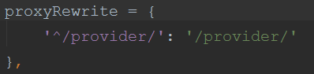
意思就是把client端里provider开头的部分，替换成代理服务的/provider/目录来处理，注意/provider/这个字符串最后的斜杠不能省略！比如client里有一个请求http://localhost:9001/provider/query/json/language/list，就会被代理到http://localhost:9002/provider/query/json/language/list来处理；
default是一个connect任务的目标，用它启动静态服务；
proxy也是一个connect任务的目标，用它启动代理服务，由于在demo里，watch任务和connect任务都启用了livereload，所以要在proxy任务里加上一个middleware中间件的配置，才能保证正确启动代理，这段代码是官网的提供的，直接使用即可。里面有一个serveStatic模块，在配置文件的前面已经引入过：
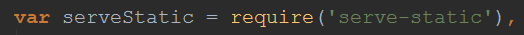
这个是grunt启动静态服务必须的，照着用就行了。
最后看下静态服务和代理服务的相关任务定义：
grunt.registerTask('staticServer', '启动静态服务......', function () {
grunt.task.run([
'copy',
'replace',
'connect:default',
'watch'
]);
});
grunt.registerTask('proxyServer', '启动代理服务......', function () {
grunt.task.run([
'copy',
'replace',
'configureProxies:proxy',
'connect:proxy',
'watch'
]);
});
在配置代理服务的时候，'configureProxies:proxy'一定要加，而且要加在connect:proxy之前，否则代理配置还没有注册成功，静态服务就启动完毕了，configureProxies这个任务并不是在配置文件中配置的，而是grunt-connect-proxy插件里面定义的，只要grunt-connect-proxy被加载进来，这个任务就能用。
4. 如何发送请求
这部分看看如何发送请求，打开首页，会看到底部引用了4个js文件：
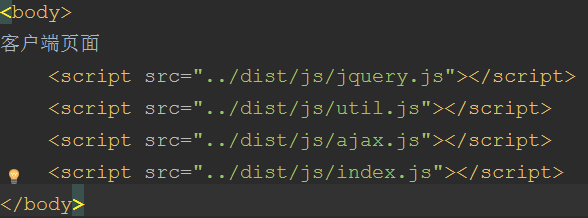
其中util.js封装了处理请求地址的功能：
var DEVELOP_MODE = '@@DEVELOP_MODE';
var Util = (function(){
var BASE_URL = location.protocol + '//' + location.hostname +
(location.port == '' ? '' : (':' + location.port)) + '/' + '@@CONTEXT_PATH';
return {
api: function (requestPath) {
var pathParts = requestPath.split('?');
pathParts[0] = pathParts[0] + (DEVELOP_MODE == 'true' ? '.json' : '');
return BASE_URL + '@@API_NAME/' + pathParts.join('?');
}
}
})();
这是源代码，还记得那个replace的任务吗，它的替换规则是
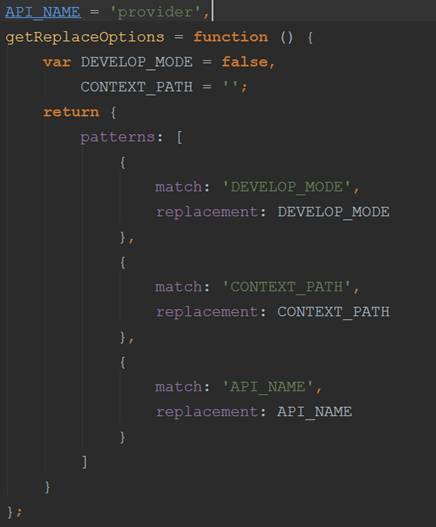
replace任务会把文件中以@@开头，按照patterns里面的配置，将匹配到的字符串替换成对应的串。在本地模式下，API_NAME是api,DEVELOP_MODE是true，CONTEXT_PATH始终是空，经过replace任务处理之后，util.js的代码会变成：
var DEVELOP_MODE = 'true';
var Util = (function(){
var BASE_URL = location.protocol + '//' + location.hostname +
(location.port == '' ? '' : (':' + location.port)) + '/' + '';
return {
api: function (requestPath) {
var pathParts = requestPath.split('?');
pathParts[0] = pathParts[0] + (DEVELOP_MODE == 'true' ? '.json' : '');
return BASE_URL + 'api/' + pathParts.join('?');
}
}
})();
在代理模式下，API_NAME是provider,DEVELOP_MODE是false，util.js经过replace之后就会变成：
var DEVELOP_MODE = 'false';
var Util = (function(){
var BASE_URL = location.protocol + '//' + location.hostname +
(location.port == '' ? '' : (':' + location.port)) + '/' + '';
return {
api: function (requestPath) {
var pathParts = requestPath.split('?');
pathParts[0] = pathParts[0] + (DEVELOP_MODE == 'true' ? '.json' : '');
return BASE_URL + 'provider/' + pathParts.join('?');
}
}
})();
这样同一个请求地址，比如query/json/language/list，经过Util.api处理之后：
Util.api('query/json/language/list')
在本地模式下就会返回：http://localhost:9001/api/query/json/language/list.json
在代理模式下返回：http://localhost:9001/provider/query/json/language/list
ajax.js对jquery的ajax进行了一下包装：
var Ajax = (function(){
function create(_url, _method, _data, _async, _dataType) {
//添加随机数
if (_url.indexOf('?') > -1) {
_url = _url + '&rnd=' + Math.random();
} else {
_url = _url + '?rnd=' + Math.random();
}
//为请求添加ajax标识，方便后台区分ajax和非ajax请求
_url += '&_ajax=true';
return $.ajax({
url: _url,
dataType: _dataType,
async: _async,
method: (DEVELOP_MODE == 'true' ? 'get' : _method),
data: _data
});
}
var ajax = {},
methods = [
{
name: 'html',
method: 'get',
async: true,
dataType: 'html'
},
{
name: 'get',
method: 'get',
async: true,
dataType: 'json'
},
{
name: 'post',
method: 'post',
async: true,
dataType: 'json'
},
{
name: 'syncGet',
method: 'get',
async: false,
dataType: 'json'
},
{
name: 'syncPost',
method: 'post',
async: false,
dataType: 'json'
}
];
for(var i = 0, l = methods.length; i < l; i++) {
ajax[methods[i].name] = (function(i){
return function(){
var _url = arguments[0],
_data = arguments[1],
_dataType = arguments[2] || methods[i].dataType;
return create(_url, methods[i].method, _data, methods[i].async, _dataType);
}
})(i);
}
//window.Ajax = ajax;
return ajax;
})();
提供了Ajax.get,Ajax.post,Ajax.syncGet,Ajax.syncPost以及Ajax.html这五个方法，之所以要封装成这样原因有2个：
第一是，统一加上随机数和ajax请求的标识：
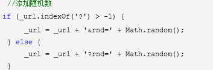
第二是，grunt-contrib-connect所启动的静态服务，只能发送get请求，不能发送post请求，所以如果在代码中有写$.post的调用就无法脱离后端服务运行起来，会报405 Method not Allowed的错误，而这个封装可以把Ajax.post这样的请求，在本地模式的时候全部替换成get方式来处理：
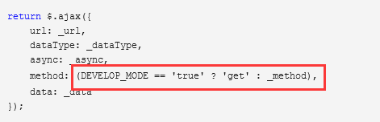
这其实还是replace任务的功劳！
index.js就是首页发请求的js了，可以看看：
Ajax.get(Util.api('query/json/language/list')).done(function(response){
console.log(response.data);
}).fail(function(){
console.log('请求失败');
});
结合util.js和ajax.js，相信你很快就能明白这个过程了。
5. 线上如何部署前后端的服务
答案还是代理。开发期间，前端通过grunt-connect-proxy把某个命名空间下的请求全部代理到了后端服务来处理，线上部署的时候后端把项目部署到tomcat这种web服务器里，前端把项目部署到Nginx服务器，然后请运维人员按照开发期间的代理规则，在Nginx服务器上加反向代理的配置，把浏览器请求前端的那些需要后端支持的请求，全部代理到tomcat服务器下的后端服务来处理。也就是说线上部署跟开发期间的交互原理是一样的，只不过代理的提供者变成Nginx而已。
6. 小结
本文总结自己这段时间做一个前后端分离的项目的一些环境准备方面的经验，文中提到的方法帮助我们解决了跨域和前端独立运行的两大问题，现在项目开发的情况非常顺利，所以从我自身的实践来说，本文的内容是比较有参考价值的，希望能够帮助到有需要的人，谢谢阅读：）
【今日微信公号推荐↓】
更多推荐请看《值得关注的技术和设计公众号》
其中推荐了包括技术、设计、极客 和 IT相亲相关的热门公众号。技术涵盖：Python、Web前端、Java、安卓、iOS、PHP、C/C++、.NET、Linux、数据库、运维、大数据、算法、IT职场等。点击《值得关注的技术和设计公众号》，发现精彩！

![]()